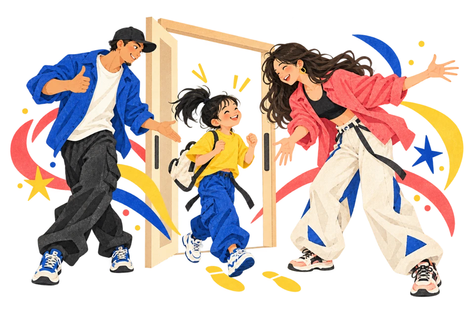

GET STARTED
入会のご案内
「どんなクラスが合うかな？」から、お気軽に。体験・見学のご相談は公式LINEで受け付けています。

- 01
- 02
クラスとレッスン回数を選ぶ
ライフスタイルに合うジャンル・曜日・回数を選びましょう。初めての方は、ベーシッククラスを中心にご相談いただけます。経験のある方のクラス選びもご相談ください。
スケジュールを見る - 03
よくあるご質問
ダンスが初めてでも相談できますか？
初めての方も、公式LINEからお気軽にご相談ください。年齢・経験・希望ジャンルに合わせて、クラスをご案内します。
何歳から始められますか？
2歳から通えるキッズ親子クラスをご案内しています。対象年齢や現在の開講状況は、公式LINEでご確認ください。
体験レッスンには何を持っていけばよいですか？
服装・持ち物・体験料金は、クラスによって異なる場合があります。申し込み時に公式LINEでご確認ください。
クラス変更・休会・退会の手続きは？
クラスの追加・変更は前月まで、休会・退会は前月20日までに指定用紙での申請お願いいたします。実際のお手続きはスクールへ確認のうえ、受付で行ってください。
YOUR FIRST STEP最初の一歩は、
最初の一歩は、
「ちょっと気になる」から。
見学・体験レッスンのご相談は、公式LINEへ。
年齢や気になるジャンル、希望の曜日をお知らせください。
スケジュールやスクールからのお知らせも、公式LINEでご案内しています。
スマートフォンで読み取って
公式LINEへ